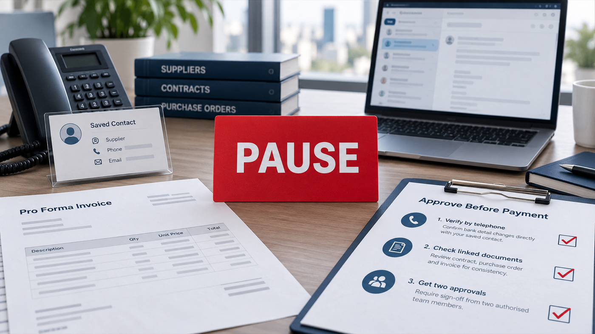

Cover: AI-assisted editorial illustration created for Taotao Sourcing. It is not a real supplier email, invoice, bank interface or payment record.
A supplier may have a legitimate reason to change its bank details. But a familiar email thread, signature, company stamp or updated proforma invoice does not independently verify a new payment instruction.
Before releasing a sample fee, deposit or balance payment, your purchasing and finance teams need a repeatable way to confirm the change, understand the companies involved and record who approved the decision.
This checklist is designed for that moment. Pausing a payment is not an accusation. It is a control step that protects both buyer and legitimate supplier.
Start with three payment gates
Independent confirmation
Confirm through a telephone number, video contact or portal that was known before the new instruction arrived.
Explainable company chain
Map the beneficiary to the contract seller, PI issuer, exporter and manufacturer.
Second-person approval
Have someone who did not request or enter the change review the evidence and approve it again.
Quick decision table
| Change received | Immediate action | Minimum condition before release |
|---|---|---|
| Account number changes; beneficiary, bank and country stay the same | Pause and call back through a previously saved channel | Supplier confirms each changed field and a second buyer-side reviewer approves it |
| Beneficiary name, receiving company or country changes | Escalate beyond a routine data update | Obtain a documented and independently confirmed explanation of the new entity’s role |
| Payment is redirected to an individual or apparently unrelated party | Do not pay | Obtain an appropriate contractual explanation and professional confirmation |
| The supplier pressures you to bypass the normal process | Keep the payment on hold | Restore trusted contact and complete the full approval process |
| Funds have already been transferred | Contact the originating bank immediately | Request a recall or reversal and begin incident reporting without waiting for the supplier investigation |
A changed beneficiary is not automatic proof of fraud. It is a reason to apply stronger verification.
Map the five parties before paying
Create one table for the order. Use full legal names rather than trading names or shortened English names.
| Role | Full legal name | Country/region | Supporting record | Status |
|---|---|---|---|---|
| Contract seller | Contract or purchase order | Match / Explained / Unresolved | ||
| PI issuer | Proforma invoice | Match / Explained / Unresolved | ||
| Exporter | Export arrangement or public customs record | Match / Explained / Unresolved | ||
| Manufacturer | Factory documents or visit evidence | Match / Explained / Unresolved | ||
| Bank beneficiary | Revised instruction and supporting agreement | Match / Explained / Unresolved |
The purpose is not to force all five roles into one company. A manufacturer may use an exporter, trading company, authorised collection agent or another documented arrangement. The purpose is to prevent an unexplained company from appearing only at the point of payment.
Original Taotao factory-visit image, cropped to remove a person. A physical site can support operating-reality checks; it does not authenticate a new payment instruction or beneficiary.
Eight-step verification checklist
1. Pause the transfer
Stop the current payment workflow. Do not reply with only “Please confirm” inside the same email thread. If an email account has been compromised, a reply may return to the same unauthorised person.
2. Preserve the original evidence
Save the complete email, sender address, Reply-To address, attachments, revised PI, chat messages and email headers. Record when the change arrived and who received it. Do not edit or overwrite the originals.
3. Call back through a trusted channel
Use a number saved before the change or independently obtained from a reliable source. If possible, speak with the supplier contact you already know and another authorised person. A new number supplied in the change message is not an independent channel.
4. Read back every changed field
Do not ask only, “Is the new account correct?” Read back the old and new beneficiary names, bank and country, account number or IBAN, SWIFT/BIC, currency, effective date and reason for the change. Confirm whether it applies to this order only or to future payments too.
5. Complete the five-party map
Compare the revised beneficiary with the contract, PO, PI and known manufacturer/exporter information. Classify each relationship as Match, Explained or Unresolved. An unresolved relationship is a hold condition.
6. Request supporting records
Depending on the arrangement, relevant documents may include an amended contract, payment-authorisation letter, collection agreement, assignment notice or export-agent agreement. Documents support the review, but do not replace the trusted call-back. A stamp, PDF or bank screenshot can also be copied or altered.
7. Obtain independent internal approval
Have a second person review how confirmation was made, the five-party map, unresolved differences, supporting records and the exact payment details entered into the banking system. Record the reviewer, date and decision.
8. Switch to incident mode if funds have moved
If the payment has already been sent and something appears wrong, stop treating the issue as an ordinary supplier discussion. Contact the originating financial institution immediately and preserve all relevant evidence.
Questions to use during the trusted call-back
We received revised payment instructions for PI/PO [reference]. Before our finance team releases payment, please confirm:
- the full legal name of the new beneficiary;
- its relationship with the contracting seller, manufacturer and exporter;
- every payment detail that has changed;
- the effective date and commercial reason for the change;
- whether it applies to this order only or to future orders; and
- the name and role of the person who authorised it.
We will complete our independent call-back and internal approval before updating the supplier payment record.
The answers create an audit trail. They do not replace independent confirmation and buyer-side approval.
What does not complete the verification
Do not approve the change only because:
- the message appears in an existing email thread;
- the display name and signature look familiar;
- the supplier sends a stamped notice or bank screenshot;
- the company name on the account looks similar;
- the factory exists and has been visited; or
- a small test payment reaches the account.
A successful test transfer shows that the account can receive money. It does not prove the beneficiary’s authority to collect for your contract.
If the money has already been sent
- Contact your originating bank immediately and ask about a payment hold, recall, reversal or other available recovery procedure.
- Give the bank accurate transaction information and follow its instructions.
- Preserve the original emails, attachments, chat records, headers and payment confirmation.
- Notify your company’s finance, management, IT/security and legal contacts as appropriate.
- Report the incident through the relevant law-enforcement or cybercrime channel in your jurisdiction.
The FBI’s IC3 advises contacting the originating financial institution as soon as the issue is recognised. Speed may improve the chance of intervention, but recovery should never be promised.
Official guidance behind this process
- FBI — Business Email Compromise: verify changes to account numbers or payment procedures directly and use a telephone number found independently.
- FBI Internet Crime Complaint Center — Business Email Compromise: use a secondary channel to verify account-information changes; contact the originating financial institution quickly after a suspect transfer.
- UK Government — Protect your business: confirm old and new details using a known phone number and set sign-off procedures for bank-detail changes.
- US Federal Trade Commission — Cybersecurity for Small Business: call vendors through a number already known to be correct and implement policies for confirming wire-transfer requests received by email.
What Chinese public records can—and cannot—confirm
China’s National Enterprise Credit Information Publicity System can help a buyer check a company’s registered legal name, registration status and other public corporate information. The General Administration of Customs online service includes enterprise-information publicity that may help clarify an exporter’s public role.
These sources can support the five-party map. They do not authenticate a bank account. Article 30 of China’s Commercial Bank Law allows commercial banks to refuse third-party enquiries about company deposits except where laws or administrative regulations provide otherwise. Buyers should not assume there is a public database that can certify ownership of a supplier’s account.
Make the next change easier to control
Add a bank-detail change procedure to supplier onboarding and contracts before the first payment. Define:
- which supplier roles may request a change;
- which pre-recorded channel will be used for confirmation;
- what documents are required;
- who updates the vendor record;
- who independently approves it; and
- whether your organisation applies a cooling-off period.
A clear procedure protects legitimate suppliers too. It prevents an attacker from redefining the verification process at the exact moment money is due.
Related buying guides
- Supplier Verification, Factory Audit, Product Inspection or Lab Test: Which Check Do You Need?
- China Sourcing Checklist: 12 Questions Before a Purchase Order
- How to Compare Chinese Supplier Quotes Beyond the Lowest Price
- Supplier Verification service scope
Optional help with an unresolved entity chain
My banking and manufacturing-business analysis background makes me careful about alignment among entities, documents, dates and explanations. It does not provide access to private banking information, and this checklist is not bank-account authentication.
If the contract seller, manufacturer, exporter, PI issuer and beneficiary still do not form a clear chain, Taotao Sourcing can help organise public corporate information and transaction roles into a scoped review.
Send only redacted documents. Remove account numbers, SWIFT/IBAN details, prices, signatures, personal data and other sensitive information. The result is a role map and a list of questions that still require direct confirmation—not bank-account authentication, legal advice or a guarantee of transaction safety.